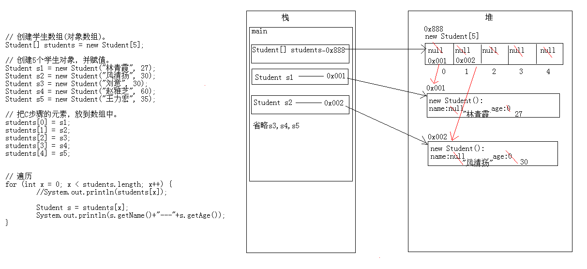
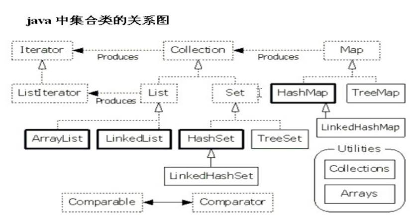
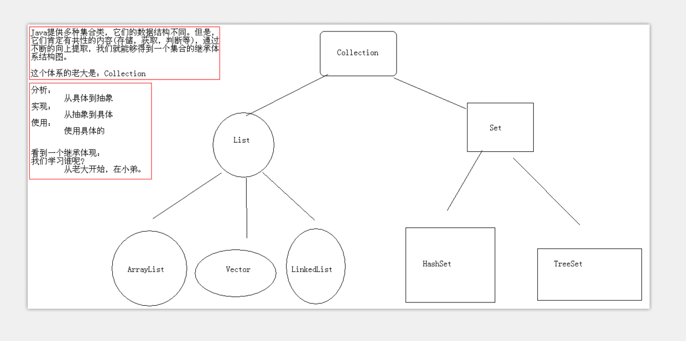
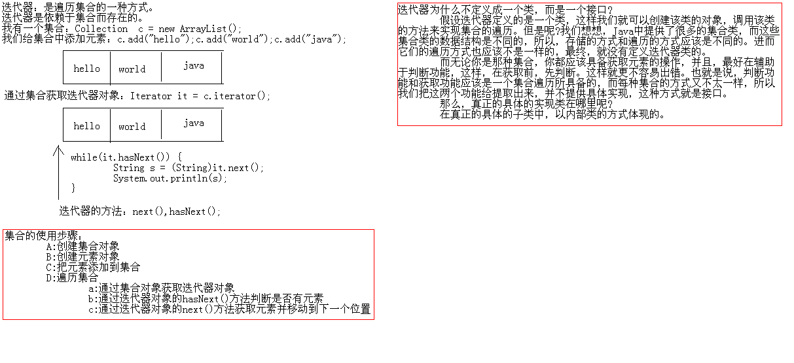
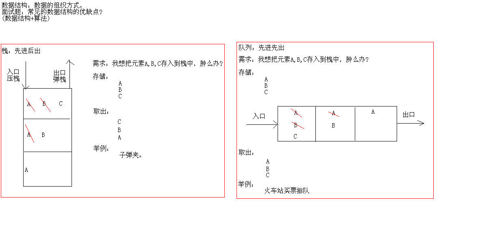
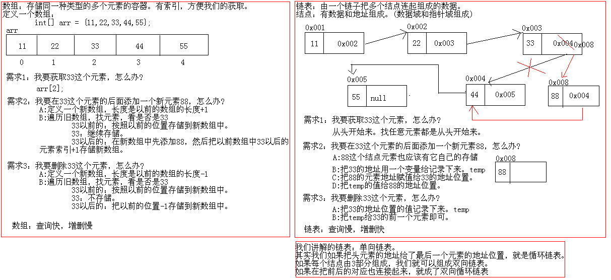

对象数组的使用¶
package cn.itcast_01; public class Student { // 成员变量 private String name; private int age; // 构造方法 public Student() { super(); } public Student(String name, int age) { super(); this.name = name; this.age = age; } // 成员方法 // getXxx()/setXxx() public String getName() { return name; } public void setName(String name) { this.name = name; } public int getAge() { return age; } public void setAge(int age) { this.age = age; } @Override public String toString() { return "Student [name=" + name + ", age=" + age + "]"; } }
对象数组:
package cn.itcast_01; /* * 我有5个学生，请把这个5个学生的信息存储到数组中，并遍历数组，获取得到每一个学生信息。 * 学生：Student * 成员变量：name,age * 构造方法：无参,带参 * 成员方法：getXxx()/setXxx() * 存储学生的数组?自己想想应该是什么样子的? * 分析： * A:创建学生类。 * B:创建学生数组(对象数组)。 * C:创建5个学生对象，并赋值。 * D:把C步骤的元素，放到数组中。 * E:遍历学生数组。 */ public class ObjectArrayDemo { public static void main(String[] args) { // 创建学生数组(对象数组)。 Student[] students = new Student[5]; // for (int x = 0; x < students.length; x++) { // System.out.println(students[x]); // } // System.out.println("---------------------"); // 创建5个学生对象，并赋值。 Student s1 = new Student("林青霞", 27); Student s2 = new Student("风清扬", 30); Student s3 = new Student("刘意", 30); Student s4 = new Student("赵雅芝", 60); Student s5 = new Student("王力宏", 35); // 把C步骤的元素，放到数组中。 students[0] = s1; students[1] = s2; students[2] = s3; students[3] = s4; students[4] = s5; // 看到很相似，就想循环改 // for (int x = 0; x < students.length; x++) { // students[x] = s + "" + (x + 1); // } // 这个是有问题的 // 遍历 for (int x = 0; x < students.length; x++) { //System.out.println(students[x]); Student s = students[x]; System.out.println(s.getName()+"---"+s.getAge()); } } }
执行:
林青霞---27 风清扬---30 刘意---30 赵雅芝---60 王力宏---35
对象数组的内存图¶

集合类¶

集合类概述¶
-
为什么出现集合类？
• 面向对象语言对事物的体现都是以对象的形式，所以
为了方便对多个对象的操作，Java就提供了集合类。
-
数组和集合类同是容器，有何不同？
•数组虽然也可以存储对象，但长度是固定的；集合长度是可变的。数组中可以存储基本数据类型，集合只能存储对象。
-
集合类的特点
• 集合只用于存储对象，集合长度是可变的，集合可以存储不同类型的对象。 
Collection接口概述¶
-
Collection接口概述
• Collection 层次结构中的根接口。Collection 表示一组对象，这些对象也称为 collection 的元素。一些 collection 允许有重复的元素，而另一些则不允许。一些 collection 是有序的，而另一些则是无序的。
Collection接口成员方法¶
-
boolean add(E e)
-
boolean remove(Object o)
-
void clear()
-
boolean contains(Object o)
-
boolean isEmpty()
-
int size()
-
boolean addAll(Collection c)
-
boolean removeAll(Collection c)
-
boolean containsAll(Collection c)
-
boolean retainAll(Collection c)
-
Object[] toArray()
• 把集合转成数组，可以实现集合的遍历
-
Iterator iterator()
• 迭代器，集合的专用遍历方式
package cn.itcast_01; import java.util.ArrayList; import java.util.Collection; /* * 集合的由来： * 我们学习的是面向对象语言，而面向对象语言对事物的描述是通过对象体现的，为了方便对多个对象进行操作，我们就必须把这多个对象进行存储。 * 而要想存储多个对象，就不能是一个基本的变量，而应该是一个容器类型的变量，在我们目前所学过的知识里面，有哪些是容器类型的呢? * 数组和StringBuffer。但是呢?StringBuffer的结果是一个字符串，不一定满足我们的要求，所以我们只能选择数组，这就是对象数组。 * 而对象数组又不能适应变化的需求，因为数组的长度是固定的，这个时候，为了适应变化的需求，Java就提供了集合类供我们使用。 * * 数组和集合的区别? * A:长度区别 * 数组的长度固定 * 集合长度可变 * B:内容不同 * 数组存储的是同一种类型的元素 * 而集合可以存储不同类型的元素 * C:元素的数据类型问题 * 数组可以存储基本数据类型，也可以存储引用数据类型 * 集合只能存储引用类型 * * 刚说过集合是存储多个元的，但是呢，存储多个元素我们也是有不同需求的：比如说，我要这多个元素中不能有相同的元素， * 再比如说，我要这多个元素按照某种规则排序一下。针对不同的需求，Java就提供了不同的集合类，这样呢，Java就提供了很多个集合类。 * 这多个集合类的数据结构不同,结构不同不重要的，重要的是你要能够存储东西，并且还要能够使用这些东西，比如说判断，获取等。 * 既然这样，那么，这多个集合类是有共性的内容的，我们把这些集合类的共性内容不断的向上提取，最终就能形成集合的继承体系结构。 * * 数据结构：数据的存储方式。 * * Collection:是集合的顶层接口，它的子体系有重复的，有唯一的，有有序的，有无序的。(后面会慢慢的讲解) * * Collection的功能概述： * 1：添加功能 * boolean add(Object obj):添加一个元素 * boolean addAll(Collection c):添加一个集合的元素 * 2:删除功能 * void clear():移除所有元素 * boolean remove(Object o):移除一个元素 * boolean removeAll(Collection c):移除一个集合的元素(是一个还是所有) * 3:判断功能 * boolean contains(Object o)：判断集合中是否包含指定的元素 * boolean containsAll(Collection c)：判断集合中是否包含指定的集合元素(是一个还是所有) * boolean isEmpty()：判断集合是否为空 * 4:获取功能 * Iterator<E> iterator()(重点) * 5:长度功能 * int size():元素的个数 * 面试题：数组有没有length()方法呢?字符串有没有length()方法呢?集合有没有length()方法呢? * 6:交集功能 * boolean retainAll(Collection c):两个集合都有的元素?思考元素去哪了，返回的boolean又是什么意思呢? * 7：把集合转换为数组 * Object[] toArray() */ public class CollectionDemo { public static void main(String[] args) { // 测试不带All的方法 // 创建集合对象 // Collection c = new Collection(); //错误，因为接口不能实例化 Collection c = new ArrayList(); // 实现的类是ArrayList(子接口的子类) // boolean add(Object obj):添加一个元素 // System.out.println("add:"+c.add("hello")); c.add("hello"); c.add("world"); c.add("java"); // 添加数据 // void clear():移除所有元素使用的是void,没有返回值直接使用这个方法 // c.clear(); // boolean remove(Object o):移除一个元素 // System.out.println("remove:" + c.remove("hello")); /* * remove:true */ // System.out.println("remove:" + c.remove("javaee")); /* * remove:false */ // boolean contains(Object o)：判断集合中是否包含指定的元素 // System.out.println("contains:" + c.contains("hello")); /* * contains:true */ // System.out.println("contains:" + c.contains("android")); /* * contains:false */ // boolean isEmpty()：判断集合是否为空 // System.out.println("isEmpty:" + c.isEmpty()); /* * isEmpty:false */ // int size():元素的个数 System.out.println("size:" + c.size()); System.out.println("c:" + c); } }
集合的一些方法功能
package cn.itcast_01; import java.util.ArrayList; import java.util.Collection; /* * boolean addAll(Collection c):添加一个集合的元素 * boolean removeAll(Collection c):移除一个集合的元素(是一个还是所有) * boolean containsAll(Collection c)：判断集合中是否包含指定的集合元素(是一个还是所有) * boolean retainAll(Collection c):两个集合都有的元素?思考元素去哪了，返回的boolean又是什么意思呢? */ public class CollectionDemo2 { public static void main(String[] args) { // 创建集合1 Collection c1 = new ArrayList(); c1.add("abc1"); c1.add("abc2"); c1.add("abc3"); c1.add("abc4"); // 创建集合2 Collection c2 = new ArrayList(); // c2.add("abc1"); // c2.add("abc2"); // c2.add("abc3"); c2.add("abc4"); c2.add("abc5"); c2.add("abc6"); c2.add("abc7"); System.out.println("c1:" + c1); System.out.println("c2:" + c2); // boolean addAll(Collection c):添加一个集合的元素(整个的添加) // System.out.println("addAll:" + c1.addAll(c2)); /* * addAll:true c1:[abc1, abc2, abc3, abc4, abc5, abc6, abc7] c2:[abc5, * abc6, abc7] */ // boolean removeAll(Collection c):移除一个集合的元素(是一个还是所有) // 只要有一个元素被移除了，就返回true。 // System.out.println("removeAll:" + c1.removeAll(c2)); /* * c1:[abc1, abc2, abc3, abc4] c2:[abc4, abc5, abc6, abc7] * removeAll:true c1:[abc1, abc2, abc3] c2:[abc4, abc5, abc6, abc7] */ // boolean containsAll(Collection c)：判断集合中是否包含指定的集合元素(是一个还是所有) // 只有包含所有的元素，才叫包含 // System.out.println("containsAll:"+c1.containsAll(c2)); // boolean retainAll(Collection c):两个集合都有的元素?思考元素去哪了，返回的boolean又是什么意思呢? // 假设有两个集合A，B。 // A对B做交集，最终的结果保存在A中，B不变。 // 返回值表示的是A是否发生过改变。(假设A包含于B那么也会返回false因为A没有发生改变) System.out.println("retainAll:" + c1.retainAll(c2));// 取交集 /* * c1:[abc1, abc2, abc3, abc4] c2:[abc4, abc5, abc6, abc7] * retainAll:true c1:[abc4] c2:[abc4, abc5, abc6, abc7] */ System.out.println("c1:" + c1); System.out.println("c2:" + c2); } }
集合数组的遍历:
package cn.itcast_01; import java.util.ArrayList; import java.util.Collection; /* * 集合的遍历。其实就是依次获取集合中的每一个元素。 * * Object[] toArray():把集合转成数组，可以实现集合的遍历 */ public class CollectionDemo3 { public static void main(String[] args) { // 创建集合对象 Collection c = new ArrayList(); // 添加元素 c.add("hello"); // Object obj = "hello"; 向上转型 c.add("world"); c.add("java"); // 遍历 // Object[] toArray():把集合转成数组，可以实现集合的遍历 Object[] objs = c.toArray(); for (int x = 0; x < objs.length; x++) { // System.out.println(objs[x]); // 我知道元素是字符串，我在获取到元素的的同时，还想知道元素的长度。 // System.out.println(objs[x] + "---" + objs[x].length()); // 上面的实现不了，原因是Object中没有length()方法 // 我们要想使用字符串的方法，就必须把元素还原成字符串 // 向下转型 String s = (String) objs[x]; // 向下转型转换成字符串 System.out.println(s + "---" + s.length()); } } }
执行:
hello---5 world---5 java---4
练习：用集合存储5个学生对象，并把学生对象进行遍历。 首先构造学生类
package cn.itcast_02; public class Student { // 成员变量 private String name; private int age; // 构造方法 public Student() { super(); } public Student(String name, int age) { super(); this.name = name; this.age = age; } // 成员方法 // getXxx()/setXxx() public String getName() { return name; } public void setName(String name) { this.name = name; } public int getAge() { return age; } public void setAge(int age) { this.age = age; } }
代码示例
package cn.itcast_02; import java.util.ArrayList; import java.util.Collection; /* * 练习：用集合存储5个学生对象，并把学生对象进行遍历。 * * 分析： * A:创建学生类 * B:创建集合对象 * C:创建学生对象 * D:把学生添加到集合 * E:把集合转成数组 * F:遍历数组 */ public class StudentDemo { public static void main(String[] args) { // 创建集合对象 Collection c = new ArrayList(); // 创建集合对象 // 创建学生对象 Student s1 = new Student("林青霞", 27); Student s2 = new Student("风清扬", 30); Student s3 = new Student("令狐冲", 33); Student s4 = new Student("武鑫", 25); Student s5 = new Student("刘晓曲", 22); // 把学生添加到集合 c.add(s1); c.add(s2); c.add(s3); c.add(s4); c.add(s5); // 把集合转成数组 Object[] objs = c.toArray(); // 转换成数组才能进行遍历 // 遍历数组 for (int x = 0; x < objs.length; x++) { // System.out.println(objs[x]); Student s = (Student) objs[x]; // 向下转换,将数组中的每个学生对象取出来进行遍历 System.out.println(s.getName() + "---" + s.getAge()); } } }
执行
林青霞---27 风清扬---30 令狐冲---33 武鑫---25 刘晓曲---22
迭代器的使用iterator
Iterator接口概述¶
-
Iterator接口概述
• 对 collection 进行迭代的迭代器
• 依赖于集合而存在
Iterator接口成员方法¶
-
boolean hasNext()
-
E next()
Iterator接口的使用和原理讲解¶
-
Iterator接口的使用讲解
-
Iterator接口的原理讲解
• 为什么不定义成一个类，而是一个接口
• 看源码是如何实现的
package cn.itcast_03; import java.util.ArrayList; import java.util.Collection; import java.util.Iterator; /* * Iterator iterator():迭代器，集合的专用遍历方式 * Object next():获取元素,并移动到下一个位置。 * NoSuchElementException：没有这样的元素，因为你已经找到最后了。 * boolean hasNext():如果仍有元素可以迭代，则返回 true。（ */ public class IteratorDemo { public static void main(String[] args) { // 创建集合对象 Collection c = new ArrayList(); // 创建并添加元素 // String s = "hello"; // c.add(s); c.add("hello"); c.add("world"); c.add("java"); // Iterator iterator():迭代器，集合的专用遍历方式 Iterator it = c.iterator(); // 实际返回的肯定是子类对象，这里是多态 // Object obj = it.next(); // System.out.println(obj); // System.out.println(it.next()); // System.out.println(it.next()); // System.out.println(it.next()); // System.out.println(it.next()); // 最后一个不应该写，所以，我们应该在每次获取前，如果有一个判断就好了 // 判断是否有下一个元素，有就获取，没有就不搭理它 // if (it.hasNext()) { // System.out.println(it.next()); // } // if (it.hasNext()) { // System.out.println(it.next()); // } // if (it.hasNext()) { // System.out.println(it.next()); // } // if (it.hasNext()) { // System.out.println(it.next()); // } // if (it.hasNext()) { // System.out.println(it.next()); // } // 最终版代码 it.hasNext,如果下面还有元素就返回的是True继续进行循环,否则返回的是False结束循环 while (it.hasNext()) { // System.out.println(it.next()); String s = (String) it.next(); System.out.println(s); } } }
执行
hello world java
重新遍历
package cn.itcast_03; import java.util.ArrayList; import java.util.Collection; import java.util.Iterator; /* * 练习：用集合存储5个学生对象，并把学生对象进行遍历。用迭代器遍历。 * * 注意： * A:自己的类名不要和我们学习的要使用的API中的类名相同。 * B:复制代码的时候，很容易把那个类所在的包也导入过来，容易出现不能理解的问题。 */ public class IteratorTest { public static void main(String[] args) { // 创建集合对象 Collection c = new ArrayList(); // 创建学生对象 Student s1 = new Student("林青霞", 27); Student s2 = new Student("风清扬", 30); Student s3 = new Student("令狐冲", 33); Student s4 = new Student("武鑫", 25); Student s5 = new Student("刘晓曲", 22); // 把学生添加到集合中 c.add(s1); c.add(s2); c.add(s3); c.add(s4); c.add(s5); // 遍历 Iterator it = c.iterator(); while (it.hasNext()) { // System.out.println(it.next()); Student s = (Student) it.next(); System.out.println(s.getName() + "---" + s.getAge()); } } }
执行
林青霞---27 风清扬---30 令狐冲---33 武鑫---25 刘晓曲---22
在一行代码中不要多次使用next()方法,每次使用都是访问一个对象
package cn.itcast_03; import java.util.ArrayList; import java.util.Collection; import java.util.Iterator; /* * 问题1:能用while循环写这个程序，我能不能用for循环呢? * 问题2:不要多次使用it.next()方法，因为每次使用都是访问一个对象。 */ public class IteratorTest2 { public static void main(String[] args) { // 创建集合对象 Collection c = new ArrayList(); // 创建学生对象 Student s1 = new Student("林青霞", 27); Student s2 = new Student("风清扬", 30); Student s3 = new Student("令狐冲", 33); Student s4 = new Student("武鑫", 25); Student s5 = new Student("刘晓曲", 22); // 把学生添加到集合中 c.add(s1); c.add(s2); c.add(s3); c.add(s4); c.add(s5); // 遍历 Iterator it = c.iterator(); while (it.hasNext()) { Student s = (Student) it.next(); System.out.println(s.getName() + "---" + s.getAge()); // NoSuchElementException 不要多次使用it.next()方法,一行语句取了两个对象的属性 // System.out.println(((Student) it.next()).getName() + "---" // + ((Student) it.next()).getAge()); } // System.out.println("----------------------------------"); // for循环改写 // for(Iterator it = c.iterator();it.hasNext();){ // Student s = (Student) it.next(); // System.out.println(s.getName() + "---" + s.getAge()); // } } }
迭代器使用图解及其原理¶

Collection案例¶
- 存储字符串并遍历(不要忘记了导包)
package cn.itcast_04; import java.util.ArrayList; import java.util.Collection; import java.util.Iterator; /* * 需求：存储字符串并遍历。 * * 分析： * A:创建集合对象 * B:创建字符串对象 * C:把字符串对象添加到集合中 * D:遍历集合 */ public class CollectionTest { public static void main(String[] args) { // 创建集合对象 Collection c = new ArrayList(); // 创建字符串对象 // 把字符串对象添加到集合中(字符串对象比较的特殊直接进行添加即可) c.add("林青霞"); c.add("风清扬"); c.add("刘意"); c.add("武鑫"); c.add("刘晓曲"); // 遍历集合 // 通过集合对象获取迭代器对象 Iterator it = c.iterator(); // 通过迭代器对象的hasNext()方法判断有没有元素 while (it.hasNext()) { // 通过迭代器对象的next()方法获取元素 String s = (String) it.next(); System.out.println(s); } } }
-
存储自定义对象并遍历
• Student(name,age)
package cn.itcast_04; import java.util.ArrayList; import java.util.Collection; import java.util.Iterator; /* * 需求：存储自定义对象并遍历Student(name,age) * * 分析： * A:创建学生类 * B:创建集合对象 * C:创建学生对象 * D:把学生对象添加到集合对象中 * E:遍历集合 */ public class CollectionTest2 { public static void main(String[] args) { // 创建集合对象 Collection c = new ArrayList(); // 创建学生对象 Student s1 = new Student("貂蝉", 25); Student s2 = new Student("小乔", 16); Student s3 = new Student("黄月英", 20); Student s4 = new Student();//空参构造 s4.setName("大乔"); s4.setAge(26); // 把学生对象添加到集合对象中 c.add(s1); c.add(s2); c.add(s3); c.add(s4); c.add(new Student("孙尚香", 18)); // 匿名对象,不推荐 // 遍历集合 Iterator it = c.iterator(); while (it.hasNext()) { Student s = (Student) it.next(); System.out.println(s.getName() + "---" + s.getAge()); } } }
执行
貂蝉---25 小乔---16 黄月英---20 大乔---26 孙尚香---18
List接口概述¶
-
List接口概述
• 有序的 collection（也称为序列）。此接口的用户可以对列表中每个元素的插入位置进行精确地控制。用户可以根据元素的整数索引（在列表中的位置）访问元素，并搜索列表中的元素。
• 与 set 不同，列表通常允许重复的元素。
-
List案例
• 存储字符串并遍历
package cn.itcast_01; import java.util.Iterator; import java.util.List; import java.util.ArrayList; /* * 需求：List集合存储字符串并遍历。 */ public class ListDemo { public static void main(String[] args) { // 创建集合对象 List list = new ArrayList(); // 创建字符串并添加字符串 list.add("hello"); list.add("world"); list.add("java"); // 遍历集合 Iterator it = list.iterator(); while (it.hasNext()) { String s = (String) it.next(); System.out.println(s); } } }
可以存储重复的字符串
package cn.itcast_01;
import java.util.ArrayList;
import java.util.Iterator;
import java.util.List;
/*
* List集合的特点：
* 有序(存储和取出的元素一致)，可重复的。
*/
public class ListDemo2 {
public static void main(String[] args) {
// 创建集合对象
List list = new ArrayList();
// 存储元素
list.add("hello");
list.add("world");
list.add("java");
list.add("javaee");
list.add("android");
list.add("javaee");
list.add("android");
// 遍历集合
Iterator it = list.iterator();
while (it.hasNext()) {
String s = (String) it.next();
System.out.println(s);
}
}
}
• 存储自定义对象并遍历
package cn.itcast_02; import java.util.ArrayList; import java.util.Iterator; import java.util.List; /* * 存储自定义对象并遍历 */ public class ListDemo { public static void main(String[] args) { // 创建集合对象 List list = new ArrayList(); // 创建学生对象 Student s1 = new Student("白骨精", 30); Student s2 = new Student("蜘蛛精", 40); Student s3 = new Student("观音姐姐", 22); // 把学生对象添加到集合对象中 list.add(s1); list.add(s2); list.add(s3); // 遍历 Iterator it = list.iterator(); while (it.hasNext()) { Student s = (Student) it.next(); System.out.println(s.getName() + "---" + s.getAge()); } } }
List接口成员方法¶
-
void add(int index,E element)
-
E remove(int index)
-
E get(int index)
-
E set(int index,E element)
-
ListIterator listIterator()
package cn.itcast_03; import java.util.ArrayList; import java.util.List; /* * List集合的特有功能： * A:添加功能 * void add(int index,Object element):在指定位置添加元素 * B:获取功能 * Object get(int index):获取指定位置的元素 * C:列表迭代器 * ListIterator listIterator()：List集合特有的迭代器 * D:删除功能 * Object remove(int index)：根据索引删除元素,返回被删除的元素 * E:修改功能 * Object set(int index,Object element):根据索引修改元素，返回被修饰的元素 */ public class ListDemo { public static void main(String[] args) { // 创建集合对象 List list = new ArrayList(); // 添加元素 list.add("hello"); list.add("world"); list.add("java"); // void add(int index,Object element):在指定位置添加元素 // list.add(1, "android");//没有问题 // IndexOutOfBoundsException // list.add(11, "javaee");//有问题 //索引越界 // list.add(3, "javaee"); //没有问题 // list.add(4, "javaee"); //有问题 //也是索引越界了 // Object get(int index):获取指定位置的元素 // System.out.println("get:" + list.get(1)); // IndexOutOfBoundsException // System.out.println("get:" + list.get(11)); // Object remove(int index)：根据索引删除元素,返回被删除的元素 // System.out.println("remove:" + list.remove(1)); // IndexOutOfBoundsException // System.out.println("remove:" + list.remove(11)); // Object set(int index,Object element):根据索引修改元素，返回被修饰的元素 System.out.println("set:" + list.set(1, "javaee")); System.out.println("list:" + list); } }
list遍历
package cn.itcast_03; import java.util.ArrayList; import java.util.List; /* * List集合的特有遍历功能： * size()和get()方法结合使用 */ public class ListDemo2 { public static void main(String[] args) { // 创建集合对象 List list = new ArrayList(); // 添加元素 list.add("hello"); list.add("world"); list.add("java"); // Object get(int index):获取指定位置的元素 System.out.println(list.get(0)); System.out.println(list.get(1)); System.out.println(list.get(2)); // IndexOutOfBoundsException // System.out.println(list.get(3)); // 用循环改进 // for (int x = 0; x < 3; x++) { // System.out.println(list.get(x)); // } // 如果元素过多，数起来就比较麻烦，所以我们使用集合的一个长度功能：size() // 最终的遍历方式就是：size()和get() for (int x = 0; x < list.size(); x++) { // System.out.println(list.get(x)); String s = (String) list.get(x); System.out.println(s); } } }
存储自定义对象并遍历,用普通for循环。(size()和get()结合)
package cn.itcast_03; import java.util.ArrayList; import java.util.Iterator; import java.util.List; /* * 存储自定义对象并遍历,用普通for循环。(size()和get()结合) */ public class ListDemo3 { public static void main(String[] args) { // 创建集合对象 List list = new ArrayList(); // 创建学生对象 Student s1 = new Student("林黛玉", 18); Student s2 = new Student("刘姥姥", 88); Student s3 = new Student("王熙凤", 38); // 把学生添加到集合中 list.add(s1); list.add(s2); list.add(s3); // 遍历 // 迭代器遍历 Iterator it = list.iterator(); while (it.hasNext()) { Student s = (Student) it.next(); System.out.println(s.getName() + "---" + s.getAge()); } System.out.println("--------"); // 普通for循环 for (int x = 0; x < list.size(); x++) { Student s = (Student) list.get(x); //向下转型 System.out.println(s.getName() + "---" + s.getAge()); } } }
列表迭代器特有的功能
ListIterator接口的成员方法¶
-
boolean hasPrevious()
-
E previous()
package cn.itcast_04; import java.util.ArrayList; import java.util.Iterator; import java.util.List; import java.util.ListIterator; /* * 列表迭代器： * ListIterator listIterator()：List集合特有的迭代器(一般是不用的) * 该迭代器继承了Iterator迭代器，所以，就可以直接使用hasNext()和next()方法。 * * 特有功能： * Object previous():获取上一个元素 * boolean hasPrevious():判断是否有元素 * * 注意：ListIterator可以实现逆向遍历，但是必须先正向遍历，才能逆向遍历，所以一般无意义，不使用。 */ public class ListIteratorDemo { public static void main(String[] args) { // 创建List集合对象 List list = new ArrayList(); list.add("hello"); list.add("world"); list.add("java"); // ListIterator listIterator() ListIterator lit = list.listIterator(); // 子类对象 while (lit.hasNext()) { String s = (String) lit.next(); System.out.println(s); } System.out.println("-----------------"); // System.out.println(lit.previous()); // System.out.println(lit.previous()); // System.out.println(lit.previous()); // NoSuchElementException // System.out.println(lit.previous()); while (lit.hasPrevious()) { String s = (String) lit.previous(); System.out.println(s); } System.out.println("-----------------"); // 迭代器 Iterator it = list.iterator(); while (it.hasNext()) { String s = (String) it.next(); System.out.println(s); } System.out.println("-----------------"); } }
执行
hello world java ----------------- java world hello ----------------- hello world java -----------------
-
ConcurrentModificationException
• 现象
• 原因
• 解决方案
package cn.itcast_04; import java.util.ArrayList; import java.util.Iterator; import java.util.List; import java.util.ListIterator; /* * 问题? * 我有一个集合，如下，请问，我想判断里面有没有"world"这个元素，如果有，我就添加一个"javaee"元素，请写代码实现。 * * ConcurrentModificationException:当方法检测到对象的并发修改，但不允许这种修改时，抛出此异常。 * 产生的原因： * 迭代器是依赖于集合而存在的，在判断成功后，集合的中新添加了元素，而迭代器却不知道，所以就报错了，这个错叫并发修改异常。 * 其实这个问题描述的是：迭代器遍历元素的时候，通过集合是不能修改元素的。 * 如何解决呢? * A:迭代器迭代元素，迭代器修改元素 * 元素是跟在刚才迭代的元素后面的。 * B:集合遍历元素，集合修改元素(普通for) * 元素在最后添加的。 */ public class ListIteratorDemo2 { public static void main(String[] args) { // 创建List集合对象 List list = new ArrayList(); // 添加元素 list.add("hello"); list.add("world"); list.add("java"); // 迭代器遍历(没有添加的功能产生异常) // Iterator it = list.iterator(); // while (it.hasNext()) { // String s = (String) it.next(); // if ("world".equals(s)) { // list.add("javaee"); // } // } // 方式1：迭代器迭代元素，迭代器修改元素 // 而Iterator迭代器却没有添加功能，所以我们使用其子接口ListIterator // ListIterator lit = list.listIterator(); // while (lit.hasNext()) { // String s = (String) lit.next(); // if ("world".equals(s)) { // lit.add("javaee"); //这里使用的是迭代器的添加功能,添加的元素跟在找到的元素的后面 // } // } // 方式2：集合遍历元素，集合修改元素(普通for) for (int x = 0; x < list.size(); x++) { String s = (String) list.get(x); if ("world".equals(s)) { list.add("javaee"); } } System.out.println("list:" + list); } }
执行
list:[hello, world, java, javaee]
常见数据结构¶
-
队(l栈) 列 
-
数组 
List:(面试题List的子类特点) ArrayList: 底层数据结构是数组，查询快，增删慢。 线程不安全，效率高。 Vector: 底层数据结构是数组，查询快，增删慢。 线程安全，效率低。 LinkedList: 底层数据结构是链表，查询慢，增删快。 线程不安全，效率高。 List有三个儿子，我们到底使用谁呢? 看需求(情况)。 要安全吗? 要：Vector(即使要安全，也不用这个了，后面有替代的) 不要：ArrayList或者LinkedList 查询多：ArrayList 增删多：LinkedList 如果你什么都不懂，就用ArrayList。
-
链表
-
哈(l树) 希表